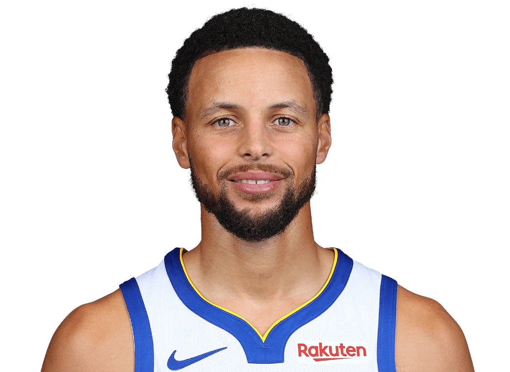
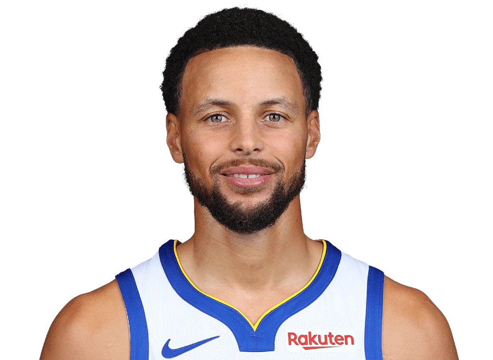

Wardell Stephen Curry II (lahir 14 Maret 1988) adalah pemain bola basket profesional Amerika dan point guard untuk Golden State Warriors dari National Basketball Association (NBA). Secara luas dianggap sebagai penembak terhebat, dan salah satu pemain terhebat sepanjang masa, Curry dipuji karena merevolusi olahraga dengan menginspirasi tim dan pemain untuk melakukan lebih banyak tembakan tiga angka.
Dia adalah juara NBA empat kali, Pemain Paling Berharga NBA (MVP) dua kali, MVP Final NBA, MVP Game All-Star NBA, Pemain Terbaik NBA Clutch Tahun Ini, dan MVP Final Wilayah Barat NBA perdana. Ia juga merupakan juara skor NBA dua kali, sepuluh kali NBA All-Star, sepuluh kali seleksi All-NBA (termasuk empat di Tim Utama). Secara internasional, ia telah memenangkan dua medali emas di Piala Dunia FIBA dan satu medali emas di Olimpiade Musim Panas 2024 sebagai bagian dari tim nasional putra AS.
 
